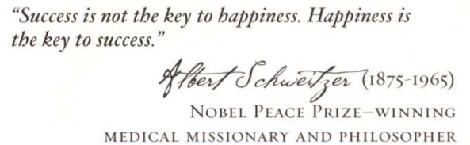
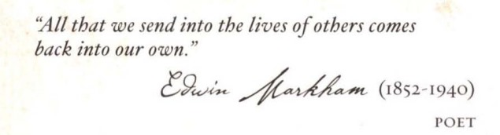

I received a lot of positive feedbacks and I believe doing this part2 would help you in many ways.Thank you so much for your love and support!
Every action of giving creates an opposite action of
receiving and what you receive is always equal to what you've
given. It is
the physics and the mathematics of the universe.
Give positivity, you receive back positivity; give negativity,
you receive back negativity. Give positivity and you receive
back a life full of positive things. Give negativity and you
receive back a life filled with negative things. And how do
you give positivity or negativity? Through your thoughts and
your feelings!
In any moment, you're giving either positive thoughts or
negative thoughts. You're giving either positive feelings or
negative feelings. And whether they're positive or negative will
determine what you receive back in your life. All the people,
circumstances, and events that make up every moment of your
life are being attracted back to you through the thoughts and
feelings you're giving out. Life doesn't just happen to you; you
receive everything in your life based on what you've given.
Give help and support
to a friend when he's moving house, and most surely that
help and support will return to you with lightning speed.
Give anger to a family member who let you down, and that
anger will also return to you, clothed in the circumstances
of your life.
You are creating your life with your thoughts and your
feelings. If
you think and feel, "I've got a difficult and stressful day today,"
then you will attract back to you all people, circumstances,
and events that will make your day difficult and stressful.
If you think and feel, "Life is really good to me," you will
attract back to you all people, circumstances, and events that
will make life really good for you .
The law of attraction is unfailingly giving you every
single thing in your life based on what you're giving out.
You magnetize and receive the circumstances of wealth,
health, relationships, your job, and every single event and
experience in your life, based on the thoughts and feelings
you're giving out. Give out positive thoughts and feelings
about money, and you magnetize positive circumstances,
people, and events that bring more money to you. Give
out negative thoughts and feelings about money, and you
magnetize negative circumstances, people, and events that
cause you to have a lack of money.
It doesn't matter whether your thoughts
and feelings are good or bad, you are giving them out, and they
will return to you as automatically and precisely as an echo
returns the same words you send out. But this means that you
can change your life by changing your thoughts and feelings.
Give positive thoughts and feelings, and you will change your
entire life!
But how do you
know whether your thoughts are positive or negative?
Your thoughts are positive when they are thoughts of what you
want and love! And negative thoughts are thoughts of what
you don't want and don't love. It is that simple and that easy.
Whatever you want in your life, you want it because you
love it.
Take a moment and think about it. You don't want
things you don't love, do you? Every person only wants what
they love; nobody wants what they don't love.
When you think or talk about the things you want and
love, such as, "I love those shoes, they're beautiful," your
thoughts are positive, and those positive thoughts will come
back to you as the things you love - beautiful shoes. When
you think or talk about the things you don't want and don't
love, such as "Look at the price of those shoes, that's highway
robbery," your thoughts are negative, and those negative
thoughts will come back to you as the things you don't love -
things that are too expensive for you.
Most people think and talk about what they don't love
more than they think and talk about what they love. They
give out more negativity than love, and in doing so they are
inadvertently depriving themselves of all the good things in life.
Life isn't happening to you; life is responding to you. Life
is your call! Every area of your life is your call. You are the
creator of your life. You are the writer of your life story. You
are the director of your life movie. You decide what your life
will be - by what you give out.
When you talk about any difficulties with money, a
relationship, an illness, or even that the profits of your
business are down, you are not talking about what you love.
When you talk about a bad event in the news, or a person or
situation that annoyed or frustrated you, you are not talking
about what you love. Talking about the bad day you had, being
late for an appointment, getting caught in traffic, or missing
the bus are all talking about what you don't love. There are
many little things that happen each day; if you get caught up
in talking about what you don't love, everyone of those little
things brings more struggle and difficulty to your life.
You have to talk about the good news of the day.
Talk
about the appointment that went well. Talk about how you love being on time. Talk about how good it is to be full of
health. Talk about the profits you want your business to
achieve. Talk about the situations and interactions you had in
your day that went well. Talk about your dreams.Talk about the good things of your life.You have to talk about what you love,
to bring what you love to you.
When you're feeling any good feeling, you can also amplify
it by looking for things you love. Before sitting down to write
this book, each day I spent several minutes amplifying my
good feelings. To amplify my good feelings, I thought about
all the things I love. I counted the things I love nonstop
one after the other: my family, friends, home, flowers in the
garden, the weather, colors, situations, events, and things I
loved that happened during the week, month, or year. I kept
listing everything I love in my mind until I felt amazing. Then
I sat down to write. It's as easy as that to amplify your good
feelings, and you can do it anywhere, at any time.
(Let's try this :
Let me do it for myself : I count my blessings and all good things of my life such as my mom,my dad,my brother,my favorite clothes,my favourite food, the happiest moments of my life, my love for books,my favourite books, my perfect life,my roommates,beautiful photos of my life etc,etc..
Similarly you people try it now for yourself ! Yes try it now. The only time is "NOW"! Share me your feelings you get after doing this simple activity)
Whatever you want in your life, you want it because you
love it and because it will make you feel good. Whatever you
don't want in your life you don't want because it will make
you feel bad.
You want health because it feels good to be healthy. You want money because it feels good
to buy and do the things you love. You want happy relationships because they make
you feel good.
You want happiness because happiness feels good.
All the things you want are motivated by the good feelings
they will give you. And how do you receive the good things
you want in your life? Good feelings! Dollars want you. Health
wants you. Happiness wants you. All the things you love want
you! They are bursting to come into your life, but you have
to give good feelings to bring them to you. You don't have to
battle and struggle to change the circumstances of your life;
all you have to do is give love through good feelings, and what
you want will appear!
Joyful circumstances bring more joyful circumstances.
Happy moments bring more happy moments.
If you have been living your life saying to yourself, "I will
be happy when I have a better house," "I will be happy when
I get a job or promotion," "I will be happy when the kids are
through college," "I will be happy when we have more money,"
"I will be happy when I can travel," or "I will be happy when
my business is a success," you will never have those things
because your thoughts are defying the way love works. They're
defying the law of attraction.

You have to be happy first, and give happiness, to receive
happy things. It can't happen any other way, because whatever
you want to receive in life, you must give first! You are in
command of your feelings, you are in command of your love,
and the force of love will give back to you whatever you
give out.
Everything in the universe is magnetic and everything
has a magnetic frequency. Your feelings and thoughts have
magnetic frequencies too. Good feelings mean you're on
a positive frequency of love. Bad feelings mean you're on
a negative frequency. Whatever you feel, whether good
or bad, determines your frequency, and like a magnet you
attract the people, events, and circumstances that are on the
same frequency!
If you are feeling enthusiastic, your frequency of
enthusiasm will attract enthusiastic people, situations, and
events. If you are feeling fearful, your frequency of fear will
attract fearful people, situations, and events to you. You are
never left in any doubt about the frequency you're on because
your frequency is always exactly whatever you're feeling! You
can change your frequency at any time by changing how you
feel, and everything around you will change because you're on
a new frequency.
Blame, criticism, finding fault, and complaining are
all forms of negativity. All of them bring so much strife.
With every little complaint and every moment you criticize
anything, you are giving negativity. Complaints about the
weather, traffic, the government, your partner, children,
parents, long lines, the economy, food, your body, your work,
customers, businesses, prices, noise, or service seem like small
harmless things, but they bring back with them a whole host
of negativity.
Throw out of your vocabulary words like terrible, horrible,
disgusting, and awful, because when you say those words, they
come with strong feelings. When you say them they must
return to you, which means you are putting those labels on
your life! Don't you think it would be a good idea to use more
words like fantastic,amazing,fabulous,brilliant and wonderful!
You can have whatever you love and want, but you have to
harmonize with love, and that means there are no excuses for
not giving love. Excuses and justifications prevent you from
receiving everything you want. They prevent you from having
an amazing life.

You don't make a connection when you complain to
a store person and then a few hours later you receive a call
from your neighbor complaining that your dog is barking.
You don't make a connection when you meet a friend for
lunch and talk negatively about a mutual friend and you arrive
back at work to discover big problems have developed with
your major client. You don't make a connection when your
dinner conversation is about something negative in the news
and that night you can't sleep because of an upset stomach.
You don't make a connection when you stop to help
someone who has dropped something in the street and
ten minutes later you get a parking space right outside the
supermarket door. You don't make a connection when you
happily help your child with their homework and the next
day you receive news that your tax refund will be bigger
than you thought. You don't make a connection when you
do a favor for a friend and, that same week, your boss gives
you two complimentary tickets to a sports game. In every
circumstance and moment of your life you are receiving what
you have given, whether you make the connection or not.
If you give more than 50 percent positive thoughts and
feelings instead of negative, you have reached a tipping point.
Even if you just give 51 percent good thoughts and good
feelings, you have tipped the scales of your life! And here's the
reason why.
When you give love, it not only comes back to you as
positive circumstances that you love, but as it comes back,
it adds even more love and positivity to your life! The new
positivity then attracts more positive things, adding even more
love and positivity to your life, and so it continues. Everything
is magnetic, and when something good comes to you, it
magnetically attracts more good things.
I want you to understand what happens to you when
you give love through your good feelings because it is truly
magnificent. Your feelings create a magnetic field that
completely surrounds you. Every person is surrounded by
a magnetic field, and so wherever you go, the magnetic
field goes with you. You may have seen ancient pictures
depicting something similar where they show an aura or halo
surrounding a person. Well, the aura surrounding each person
is actually an electromagnetic field, and it's through the
magnetism of your field that surrounds you that you attract
everything in your life. What determines whether your field
is positive or negative at any time is your feelings!
Every single time you give love, through your feelings,
words, or actions, you add more love to the field around you.
The more love you give, the greater and more powerful is your
magnetic field. Whatever is in your magnetic field is attracting
to itself, and so the more love in your field, the more power
you have to attract the things you love. You can get to a
point where the magnetic power in your field is so positive
and strong that you can have a flash of imagining and feeling
something good, and within no time, it has appeared in your
life! That is the incredible power you have. And that is the
phenomenal power of the force of love!
I want to share a very simple situation that happened
in my life that demonstrates how fast love can work. I love
flowers and so I do my best to have fresh flowers each week
because they make me feel happy. Usually I buy flowers from
the farmer's market, but on this particular week it was raining
and there was no farmer's market, and no flowers. My response
to there being no flowers was that it was a really good thing
because it would make me appreciate and love flowers even
more. Instead of feeling disappointment, I chose to feel love,
and so I filled my magnetic field with the love of flowers.
Within two hours I received a delivery of an enormous
vase of flowers. From across the other side of the world, my
sister had sent me the most beautiful flowers you have ever
seen, thanking me for something I had done for her. When
you can give love, no matter what the circumstances, the
circumstances must change!
Now you can appreciate why it is so important to choose
love, because every time you give love, you increase and
multiply the love in the magnetic field around you. The more
love you give in your day-to-day life, the greater the magnetic
power of love you have in the field around you, and everything
you want will fall at your feet.
ABOUT THE AUTHOR :
Rhonda Byrne's intention is:
joy to billions.
She began her journey with The Secret
film, viewed by millions across the
planet. She followed with The Secret
book, a worldwide bestseller now
available in 46 languages.
Now with The Power, Rhonda Byrne
continues her groundbreaking work,
as she reveals the single greatest
force in our universe.
THE POWER: Purchase link
THE SECRET: Purchase link
Follow for more updates